Task 1 – Object Detection using Template Matching (Correlation)
Demo Video – Template Matching (Task 1)
This video demonstrates the Task 1 correlation-based template matching process.
Demonstrate detection of 10 objects in a scene using correlation-based template matching.
The templates (cropped images) must be taken from different scenes, not cropped from the scene image.
Here we use one scene image that contains all 10 objects, and 10 template images captured in different
backgrounds.
Place your files as:
task1/scene.jpg (contains all 10 objects) and
templates_task1/template1.jpg … template10.jpg (templates from different scenes).
Then run code/task1_template_matching.py to generate
task1/result_all.jpg.
Scene Image (All 10 Objects)
Replace this placeholder path with your actual scene image.
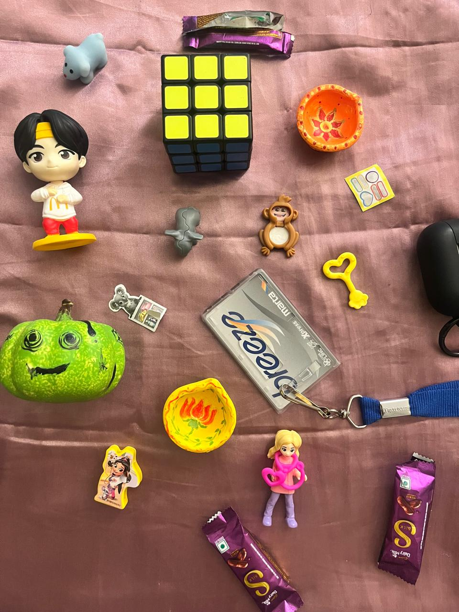
10 Template Images (Different Scenes)
Each template must be captured from a different background.
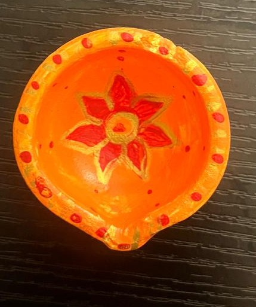
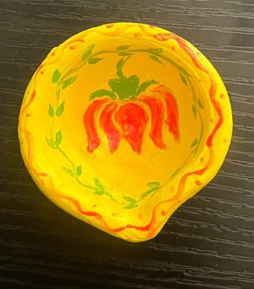
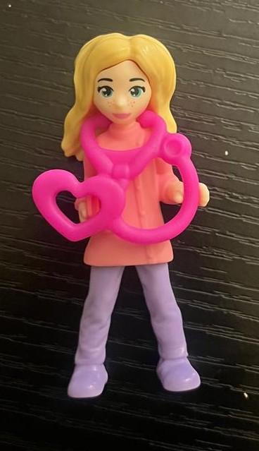
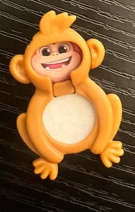
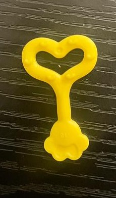
Result – All 10 Objects Detected
This will be generated by task1_template_matching.py.
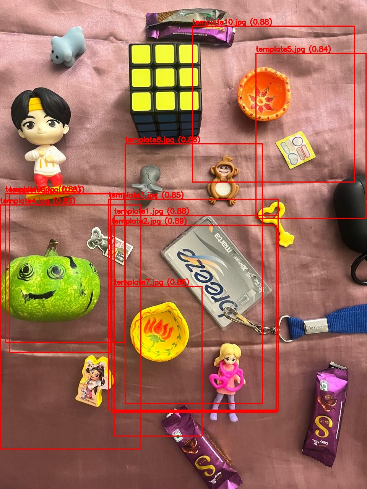
Task 2 – Convolution and Fourier Transform
Consider an image L captured by your camera. Apply a Gaussian blur filter to obtain L_b,
then attempt to reconstruct L from L_b using Fourier transform-based image filtering.
Place your images under task2/ with filenames
L.jpg, L_b.jpg and
L_restored.jpg, or adjust the paths below.
Original Image L
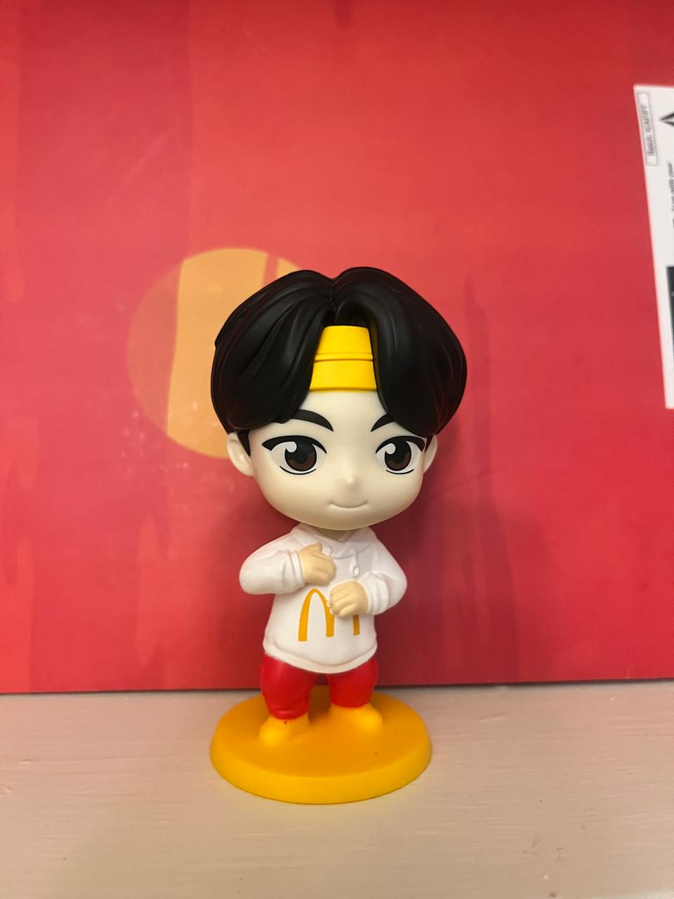
Blurred Image L_b
Restored Image (Fourier-based)
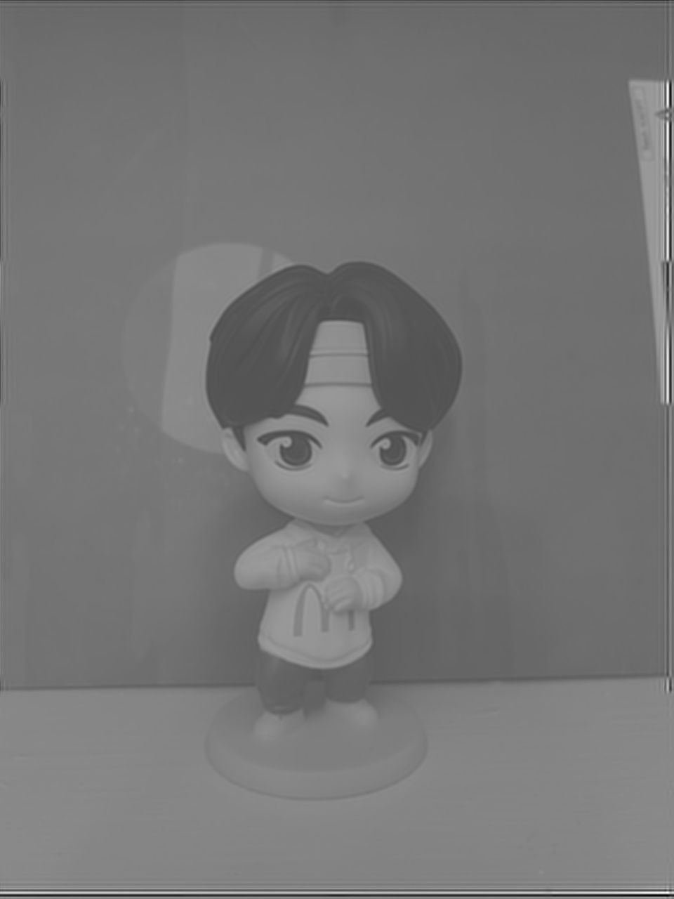
A starter script is provided at code/fft_deblur_template.py.
You can adapt it to match your derivation in the report.
Task 3 – Template Matching Web Application with Blurring
This interactive demo acts as a template matching web application. It uses a local database of 10 templates from
templates/, checks for their presence in a user-uploaded scene image using
correlation-based template matching,
and then blurs the entire detected regions.
Put your 10 template images in the templates/ folder as template1.jpg … template10.jpg (you can reuse the same
images as in templates_task1/).
Start a local server from module2_corr_single_scene/ (e.g., python -m http.server 8000).
Open http://localhost:8000/index.html in your browser.
Upload a scene image and click “Run Template Matching & Blur”.
Template Database (Web App)
These are the 10 templates used by the web app (Task 3).
 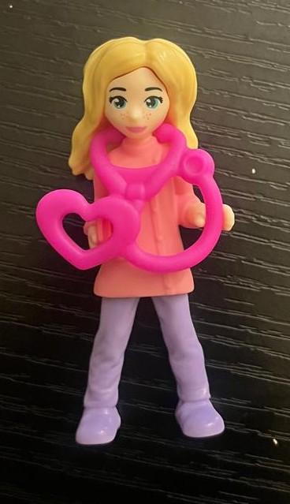
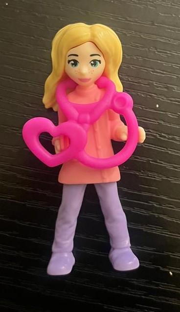
 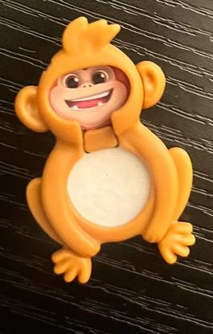
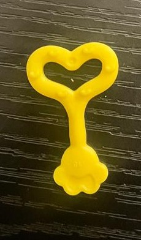
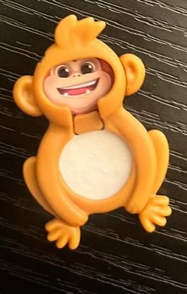
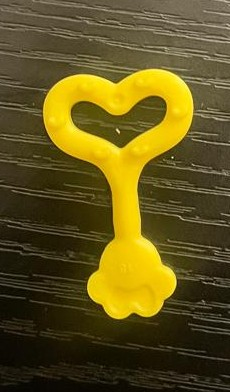


 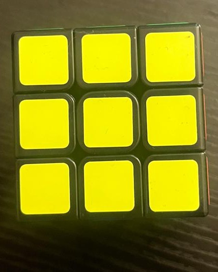
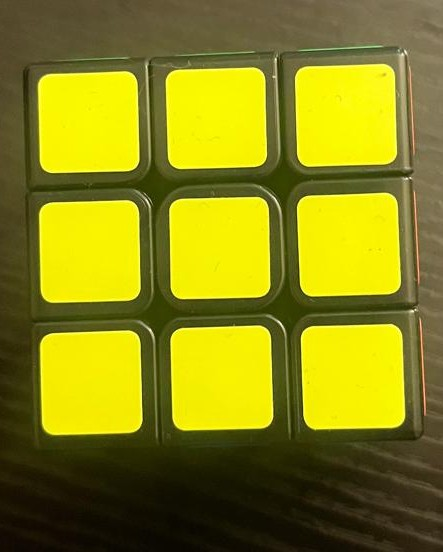
 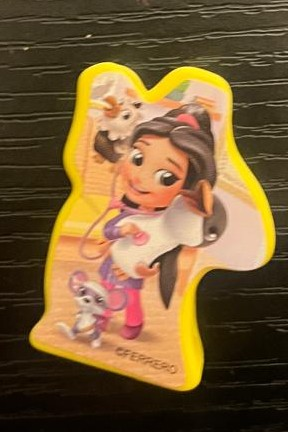
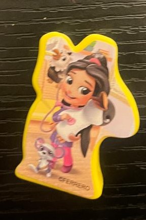

 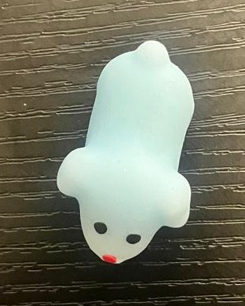
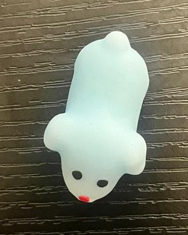